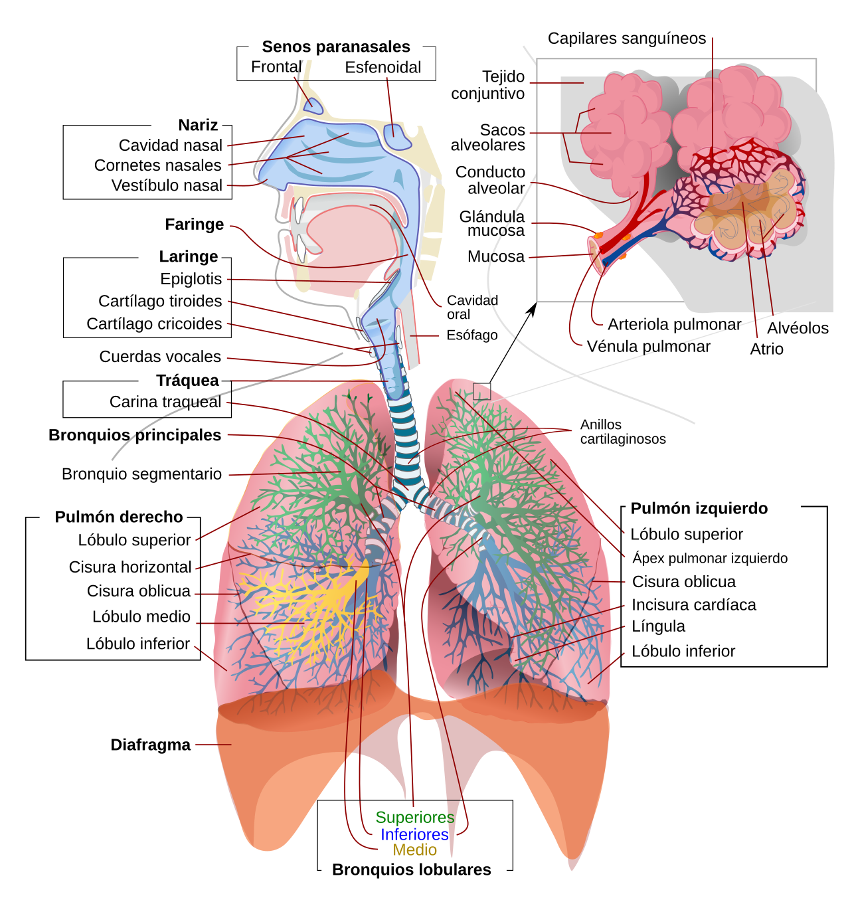
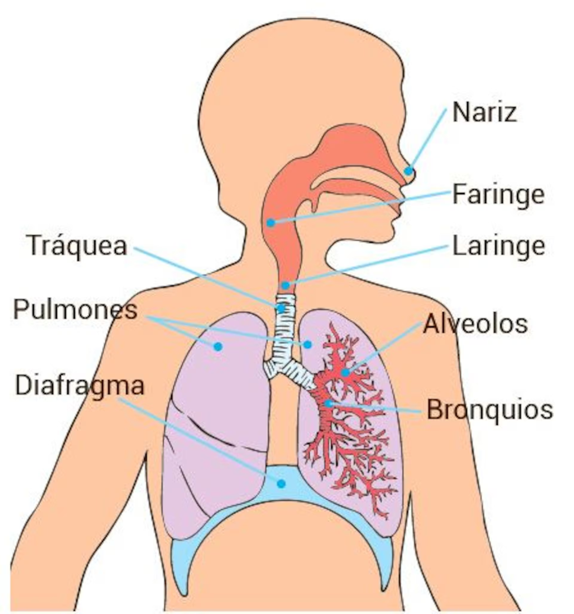
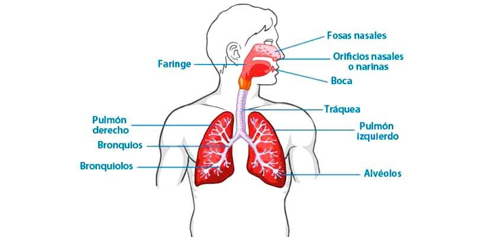
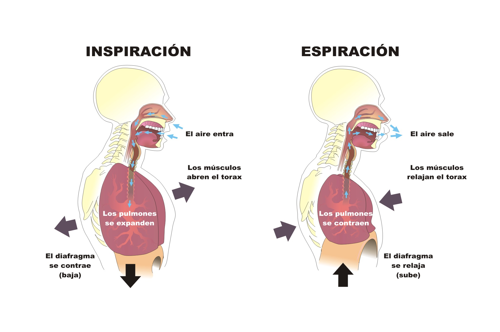
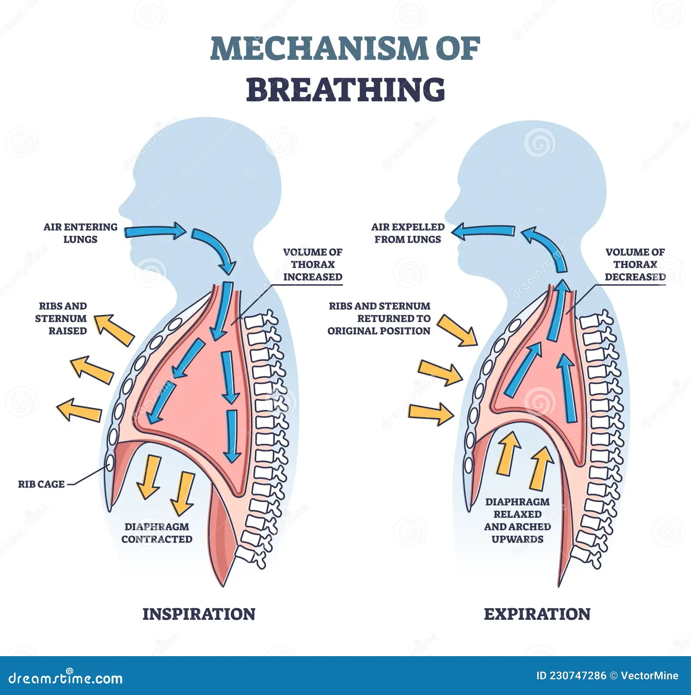
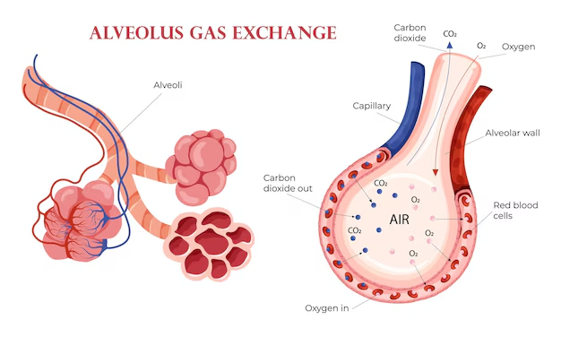
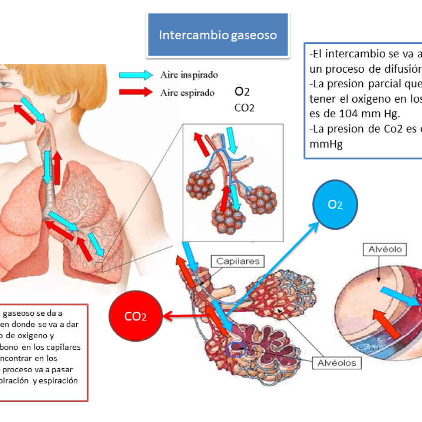

🫁 ¿Qué es el Sistema Respiratorio?
El sistema respiratorio es el conjunto de órganos encargados de capturar oxígeno del aire y expulsar dióxido de carbono (CO₂), un desecho metabólico producido por las células. Aunque parece simple —"inhalar y exhalar"— es un proceso extraordinariamente complejo que involucra anatomía, mecánica, química y fisiología celular.
Sin oxígeno, las células no pueden realizar la respiración celular, el proceso que genera ATP (la "moneda energética" del cuerpo). Una persona puede sobrevivir semanas sin comida, días sin agua, pero solo minutos sin respirar. Eso da una idea de la vital importancia de este sistema.
🎯 Objetivos de Aprendizaje
Al finalizar este tema serás capaz de: identificar los órganos del sistema respiratorio y sus funciones, explicar el mecanismo de la inspiración y la espiración, describir el intercambio gaseoso en los alvéolos, comprender los volúmenes y capacidades pulmonares, y reconocer las principales enfermedades respiratorias y sus factores de riesgo.
🗺️ Anatomía: El Mapa del Sistema Respiratorio
El sistema respiratorio se divide en dos grandes grupos: las vías respiratorias superiores (nariz, faringe, laringe) y las vías respiratorias inferiores (tráquea, bronquios, bronquiolos, pulmones y alvéolos). También incluye el diafragma, el músculo principal de la respiración.

Figura 1: Aparato respiratorio completo con vías aéreas superiores e inferiores. Fuente: Wikipedia.

Figura 2: Partes principales del sistema respiratorio con etiquetas en español. Fuente: ABC Color.

Figura 3: Esquema simplificado del sistema respiratorio con nomenclatura en español. Fuente: Prixz.
Órganos del Sistema Respiratorio
👃 Nariz y Fosas Nasales
Entrada principal del aire. Los pelos nasales y la mucosa filtran, humidifican y calientan el aire. Los senos paranasales (cavidades llenas de aire en los huesos del cráneo) amplifican la voz y reducen el peso del cráneo.
👄 Faringe
Tubo muscular de ~12 cm que conecta nariz/boca con laringe y esófago. Es un cruce compartido entre sistema respiratorio y digestivo. La epiglotis evita que los alimentos entren a la laringe al tragar.
🗣️ Laringe
Conocida como la "caja de la voz". Contiene las cuerdas vocales (pliegues que vibran al pasar el aire, produciendo sonido). También protege la entrada a la tráquea con la epiglotis.
🌬️ Tráquea
Tubo de ~10-12 cm y 2 cm de diámetro con anillos de cartílago en forma de C que mantienen la vía abierta. Está recubierta de cilios y células productoras de mucus que atrapar partículas extrañas.
🌳 Bronquios y Bronquiolos
La tráquea se divide en dos bronquios (uno para cada pulmón). Cada bronquio se ramifica en bronquiolos más pequeños, formando un árbol invertido de ~23 generaciones de divisiones. Los bronquiolos terminales son del tamaño de un cabello humano.
🫁 Pulmones
Órganos esponjosos ubicados en la cavidad torácica, protegidos por las costillas. El pulmón derecho tiene 3 lóbulos; el izquierdo, 2 (para dejar espacio al corazón). Juntos pesan ~1.3 kg y contienen ~300 millones de alvéolos.
¿Sabías que...?
Si se desplegaran todos los alvéolos de tus pulmones y se extendieran sobre una superficie plana, cubrirían aproximadamente 70-100 m² —el tamaño de una cancha de tenis. Esta enorme superficie es necesaria para maximizar el intercambio de gases con la sangre.
💨 Mecanismo de la Respiración: Inspiración y Espiración
La respiración no es un proceso pasivo: requiere la acción coordinada de músculos, especialmente el diafragma y los músculos intercostales (entre las costillas). La respiración se divide en dos fases: inspiración (aire entra) y espiración (aire sale).

Figura 4: Inspiración (diafragma se contrae y baja, pulmones se expanden) vs. Espiración (diafragma se relaja y sube, pulmones se contraen). Fuente: PNTIC MEC.

Figura 5: Mecanismo de la respiración con detalle de costillas, esternón y diafragma. Fuente: Dreamstime.
La Inspiración (Inhalación)
☀️ Contracción del Diafragma
El diafragma (músculo en forma de cúpula entre tórax y abdomen) se contrae y aplana, descendiendo hacia el abdomen. Esto aumenta el volumen de la cavidad torácica.
📐 Elevación de las Costillas
Los músculos intercostales externos elevan las costillas y el esternón hacia arriba y hacia afuera, expandiendo aún más el tórax. Esto es especialmente evidente en respiración profunda o ejercicio.
🫁 Expansión de los Pulmones
Al aumentar el volumen torácico, la presión intrapulmonar disminuye (ley de Boyle: presión ∝ 1/volumen). El aire atmosférico (a mayor presión) fluye hacia los pulmones para equilibrar la presión.
La Espiración (Exhalación)
🌙 Relajación del Diafragma
El diafragma se relaja y vuelve a su forma de cúpula, ascendiendo. Los músculos intercostales se relajan y las costillas descienden.
📉 Disminución del Volumen Torácico
La cavidad torácica se reduce de tamaño. Los pulmones, por elasticidad, se contraen y empujan el aire hacia afuera.
💨 Salida del Aire
La presión intrapulmonar aumenta por encima de la atmosférica, expulsando el aire rico en CO₂. En reposo, la espiración es pasiva (no requiere energía muscular); en ejercicio, los músculos intercostales internos y abdominales participan activamente.
📊 Volumen y Capacidades Pulmonares
Volumen corriente (VC): ~500 mL —aire que entra/sale en una respiración normal.
Volumen de reserva inspiratoria (VRI): ~3,000 mL —aire adicional que puedes inhalar forzosamente.
Volumen de reserva espiratoria (VRE): ~1,100 mL —aire adicional que puedes exhalar forzosamente.
Volumen residual (VR): ~1,200 mL —aire que siempre permanece en los pulmones (evita colapso).
Capacidad vital (CV): ~4,600 mL —máximo aire que puedes mover (VC + VRI + VRE).
Capacidad pulmonar total (CPT): ~5,800 mL —aire total que cabe en los pulmones (CV + VR).
¿Sabías que...?
Un adulto promedio respira aproximadamente 20,000 veces al día, moviendo unos 11,000 litros de aire. Durante el ejercicio intenso, la frecuencia respiratoria puede aumentar hasta 40-60 respiraciones por minuto y el volumen corriente puede duplicarse o triplicarse. Un atleta de élite puede mover hasta 150 litros de aire por minuto durante el esfuerzo máximo.
🔄 Intercambio Gaseoso: Donde el Aire se Convierte en Vida
El intercambio gaseoso es el proceso mediante el cual el oxígeno pasa del aire alveolar a la sangre y el dióxido de carbono pasa de la sangre al aire alveolar. Ocurre en los alvéolos, pequeños sacos de aire rodeados por una red densa de capilares sanguíneos.

Figura 6: Intercambio gaseoso en los alvéolos: O₂ entra a la sangre, CO₂ sale. Fuente: Magnific/Freepik.

Figura 7: Diagrama del intercambio gaseoso mostrando difusión de O₂ y CO₂ entre alvéolos y capilares. Fuente: Pictoeduca.
¿Cómo Funciona el Intercambio?
El intercambio ocurre por difusión simple: las moléculas se mueven espontáneamente desde zonas de alta concentración a zonas de baja concentración, a través de la membrana respiratoria (pared alveolar + pared capilar + líquido intersticial).
🔵 Oxígeno (O₂)
- El aire alveolar tiene ~104 mmHg de O₂ (vs. 160 mmHg en aire atmosférico).
- La sangre venosa llega con ~40 mmHg de O₂.
- El O₂ difunde desde los alvéolos (alta presión) hacia la sangre (baja presión).
- Se une a la hemoglobina de los glóbulos rojos, formando oxihemoglobina.
- La sangre arterial sale con ~100 mmHg de O₂.
🔴 Dióxido de Carbono (CO₂)
- La sangre venosa llega con ~46 mmHg de CO₂.
- El aire alveolar tiene ~40 mmHg de CO₂.
- El CO₂ difunde desde la sangre (alta presión) hacia los alvéolos (baja presión).
- Se transporta en sangre de 3 formas: disuelto en plasma (7%), como bicarbonato (70%), y unido a hemoglobina (23%).
- La sangre arterial sale con ~40 mmHg de CO₂.
🧪 La Membrana Respiratoria
La barrera que separa el aire alveolar de la sangre capilar tiene solo 0.5 micrómetros de grosor —menos que el grosor de una célula. Está compuesta por: 1) fluido surfactante (reduce tensión superficial), 2) células epiteliales alveolares tipo I, 3) membrana basal, 4) endotelio capilar. Esta delgadez extrema permite que el intercambio sea extremadamente rápido: el O₂ tarda solo 0.25 segundos en cruzarla.
¿Sabías que...?
Los alvéolos están recubiertos de una sustancia llamada surfactante pulmonar, una mezcla de lípidos y proteínas que reduce la tensión superficial del agua en su interior. Sin surfactante, los alvéolos se colapsarían como globos desinflados después de cada espiración. Los bebés prematuros a veces necesitan surfactante artificial porque sus pulmones aún no lo producen suficientemente.
🧠 Control de la Respiración: El Cerebro al Mando
Aunque podemos controlar conscientemente nuestra respiración (por ejemplo, aguantar la respiración), la mayor parte del tiempo es un proceso involuntario regulado por el sistema nervioso. El centro respiratorio está ubicado en el bulbo raquídeo y la protuberancia del tronco encefálico.
Centros Respiratorios del Cerebro
🎯 Centro Respiratorio Dorsal (Bulbo Raquídeo)
Genera el ritmo básico de respiración. Envía señales que activan los músculos inspiratorios (diafragma e intercostales). Es el "metrónomo" de la respiración.
🎯 Centro Respiratorio Ventral (Bulbo Raquídeo)
Controla la espiración forzada. Se activa durante el ejercicio intenso, enviando señales a los músculos abdominales e intercostales internos para expulsar el aire con fuerza.
🎯 Centros de la Protuberancia (Puente de Varolio)
Modulan la intensidad y ritmo de la respiración. El centro pneumotáxico limita la inspiración (evita que los pulmones se sobreinflen). El centro apneústico prolonga la inspiración.
🎯 Quimiorreceptores
Detectan cambios en la sangre: quimiorreceptores centrales (en el bulbo, sensibles a pH del líquido cefalorraquídeo) y quimiorreceptores periféricos (en las arterias carótidas y aórtica, sensibles a O₂, CO₂ y pH sanguíneo).
⚡ El Reflejo de la Respiración
El principal estímulo para respirar no es la falta de oxígeno, sino el aumento de CO₂ en la sangre. Cuando el CO₂ sube, el pH sanguíneo baja (se vuelve más ácido) y los quimiorreceptores envían señales al bulbo raquídeo para aumentar la frecuencia y profundidad de la respiración. Por eso, cuando corres, no sientes "falta de aire" por falta de O₂, sino por acumulación de CO₂. Esto también explica por qué es difícil aguantar la respiración hasta desmayarse: cuando el CO₂ alcanza un nivel crítico, el cerebro "toma el control" y fuerza una inspiración involuntaria.
¿Sabías que...?
La respiración de Cheyne-Stokes es un patrón respiratorio donde la respiración se vuelve progresivamente más profunda y rápida, luego más lenta y superficial, hasta que se detiene brevemente (apnea), y el ciclo se repite. Se observa en pacientes con insuficiencia cardíaca, daño cerebral o en altitudes extremas. Charles Darwin sufrió este patrón en sus últimos años.
⚠️ Enfermedades del Sistema Respiratorio
Las enfermedades respiratorias son una de las principales causas de morbilidad y mortalidad en el mundo. Muchas son prevenibles con hábitos saludables y evitando la exposición a contaminantes.
| Enfermedad | Descripción | Causas / Factores de Riesgo |
|---|---|---|
| Asma | Inflamación crónica de las vías respiratorias que causa broncoespasmos (contracción de bronquios), dificultando la respiración. | Alergenos (polen, ácaros), contaminación, ejercicio, estrés. Tiene componente genético. |
| Bronquitis crónica | Inflamación prolongada de los bronquios con producción excesiva de mucus. Forma parte de la EPOC. | Tabaquismo (principal), contaminación del aire, infecciones respiratorias repetidas. |
| Enfisema | Destrucción de las paredes alveolares, reduciendo la superficie de intercambio gaseoso. Forma parte de la EPOC. | Tabaquismo (90% de los casos), exposición a polvo y químicos, deficiencia de alfa-1 antitripsina. |
| Neumonía | Infección de los alvéolos (bacteriana, viral o fúngica) que se llenan de líquido o pus, dificultando el intercambio de gases. | Bacterias (Streptococcus pneumoniae), virus (gripe, COVID-19), inmunodeficiencia, edad avanzada. |
| Tuberculosis (TB) | Infección bacteriana (Mycobacterium tuberculosis) que afecta principalmente los pulmones. Puede latente o activa. | Contacto cercano con infectados, sistemas inmunitarios debilitados, hacinamiento, malnutrición. |
| Cáncer de pulmón | Crecimiento descontrolado de células en los pulmones. El tipo más común es el carcinoma de células pequeñas y no pequeñas. | Tabaquismo (85% de los casos), exposición al radón, asbesto, contaminación del aire, historia familiar. |
| COVID-19 | Enfermedad viral causada por SARS-CoV-2 que puede causar neumonía viral, síndrome de dificultad respiratoria aguda (SDRA) y daño multisistémico. | Virus transmitido por gotículas respiratorias. Factores de riesgo: edad avanzada, obesidad, comorbilidades. |
| Apnea del sueño | Interrupciones repetidas de la respiración durante el sueño por obstrucción de las vías respiratorias (apnea obstructiva) o falla del centro respiratorio (apnea central). | Obesidad, anatomía de vías respiratorias, edad avanzada, consumo de alcohol/sedantes. |
🟢 Prevención
- No fumar: El tabaquismo es el factor de riesgo #1 para EPOC, cáncer de pulmón y bronquitis crónica.
- Vacunación: Vacunas contra influenza, neumonía y COVID-19 reducen infecciones graves.
- Ejercicio aeróbico: Fortalece los músculos respiratorios y mejora la capacidad pulmonar.
- Higiene: Lavarse las manos, cubrirse al estornudar, evitar contacto cercano con enfermos.
- Calidad del aire: Evitar áreas con alta contaminación; usar purificadores en interiores.
🔵 Señales de Alerta
- Dificultad para respirar (disnea): Especialmente en reposo o al acostarse.
- Tos persistente: Más de 3 semanas, especialmente con sangre (hemoptisis).
- Dolor torácico: Al respirar profundamente puede indicar pleuritis o neumonía.
- Sibilancias: Sonido silbante al exhalar, típico de asma o bronquitis.
- Cianosis: Labios o uñas azulados por falta de oxígeno en sangre.
¿Sabías que...?
El tabaquismo es responsable de aproximadamente 8 millones de muertes al año en el mundo, de las cuales ~1.3 millones son de no fumadores expuestos al humo de segunda mano. Un solo cigarrillo contiene más de 7,000 químicos, de los cuales al menos 70 son carcinógenos conocidos. Los pulmones de un fumador pueden recuperar parte de su función si deja de fumar antes de los 30 años, pero algunos daños son irreversibles.
🔬 Respiración Celular: El Destino Final del Oxígeno
El sistema respiratorio no trabaja solo: su función final es proveer oxígeno a las células para la respiración celular, el proceso que genera ATP. Sin este proceso, las células no podrían realizar ninguna función vital.
⚡ La Ecuación de la Respiración Celular
C₆H₁₂O₆ + 6 O₂ → 6 CO₂ + 6 H₂O + ATP (energía)
Glucosa + Oxígeno → Dióxido de carbono + Agua + Energía utilizable
La respiración celular ocurre en tres etapas principales dentro de las células:
- Glicólisis (citoplasma): La glucosa se divide en dos moléculas de piruvato, generando 2 ATP y NADH. No requiere oxígeno.
- Ciclo de Krebs (mitocondria): El piruvato se descompone completamente en CO₂, generando NADH, FADH₂ y 2 ATP más. Requiere oxígeno indirectamente.
- Cadena de transporte de electrones (mitocondria): El O₂ actúa como aceptor final de electrones, combinándose con H⁺ para formar agua. Genera ~34 ATP —la mayor parte de la energía.
🔗 Conexión con el Sistema Circulatorio
El sistema respiratorio y el circulatorio trabajan en equipo inseparable: los pulmones oxigenan la sangre, y el corazón la bombea a las células. Las células usan el O₂ para la respiración celular y liberan CO₂ como desecho. El CO₂ retorna por venas al corazón, que lo envía de vuelta a los pulmones para ser exhalado. Este ciclo se repite 24 horas al día, 7 días a la semana, desde antes de que nacieras hasta tu último aliento.
🤯 Datos Curiosos sobre tu Respiración
¿Sabías que...?
El aire que exhalas contiene aproximadamente 16% de oxígeno (vs. 21% en el aire atmosférico) y 4-5% de dióxido de carbono (vs. 0.04% en el aire). Eso significa que tus pulmones no extraen todo el oxígeno del aire: solo capturan lo que necesitan. Por eso, la respiración boca a boca (RCP) puede salvar vidas: el aire exhalado aún tiene suficiente oxígeno para mantener a otra persona con vida.
¿Sabías que...?
Los pulmones son los únicos órganos que pueden flotar en agua gracias a los millones de alvéolos llenos de aire. Los patólogos forenses usan esta propiedad para determinar si un bebé nació vivo (pulmones flotan) o muerto (pulmones se hunden). Los pulmones de un fumador, sin embargo, pueden perder esta capacidad debido a la acumulación de alquitrán y fluidos.
¿Sabías que...?
El estornudo puede expulsar partículas a una velocidad de 160 km/h y proyectar gotículas hasta 8 metros de distancia. El cuerpo lo activa para expulsar irritantes de las vías respiratorias. Durante un estornudo, el corazón no "se detiene" como dicen los mitos urbanos, pero la presión torácica aumenta drásticamente, lo que puede alterar momentáneamente el flujo sanguíneo.
¿Sabías que...?
La nariz derecha e izquierda no funcionan igual simultáneamente. El cuerpo alterna el flujo de aire predominante entre una fosa nasal y otra cada 2-3 horas en un ciclo llamado "ciclo nasal" o ritmo nasal. Esto mantiene húmedas las fosas nasales y evita que se sequen por uso continuo. También explica por qué a veces una nariz está más "tapada" que la otra.
📝 Verifica tu Aprendizaje
Responde estas preguntas para comprobar lo que has aprendido. (Las respuestas se mostrarán al hacer clic)